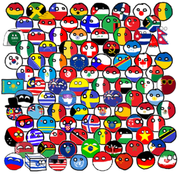

- Polandball rules
- Polandball exceptions
Polandball exceptions
Well as I said Polandball(Coutnryballs)has many rules
But There is some exceptions
And here is a list

- Reich is rectangle
Anschluss!
- Kazakhstan is a brick
- British Colony Singapore and Singapore and Bermuda and Nariñoball are Triangle a.k.a Tringapore BermudaTriangle and Nariñotriangle
- Biliard balls are ancient civilizations and aileans or sometimes different race,tribes
1ball can be used to SouthEast Asians
2ball can be used to Europeans
3ball can be used to native Americans including s including Shoshone, Cherokee, Navajo, the Mayans, Aztecs and Incas
4ball can be used to Prehistoric peoples
5ball formerly describing natives of Austrailia
6ball can be used to aileans
7ball can be used to Native Islanders
8ball,depicting Sub-Saharan or Native Africans or Africans without flags or African. minorities. On the flag of the Olympic Games, the black color represents Africa.
- I said about Poland before so I will pass
- Indonesia often wears a rice hat or peci and Monaco often wears Sunglasses
- Chad's eye is often 8ball